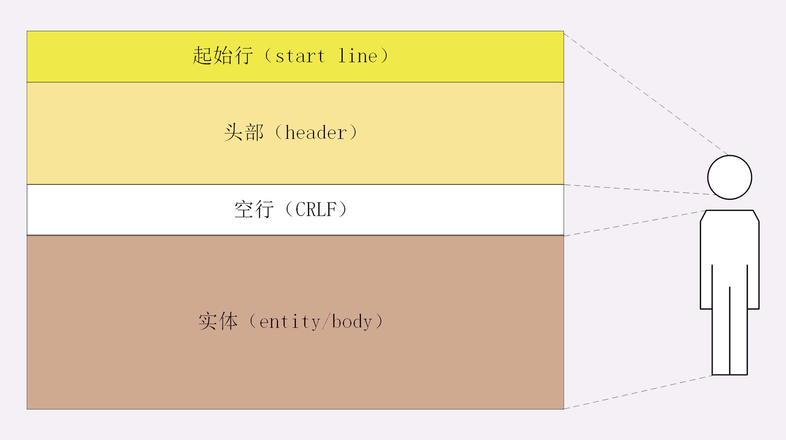

透视HTTP协议
Table of Contents
名词解释
- HTTP：HyperText Transfer Protocol 超文本传输协议
- CDN: Content Delivery Network 内容分发网络
- IP 协议: Internet Protocol
- TCP 协议：Transmission Control Protocol
- DNS: Domain Name System 域名系统，域名”（Domain Name）又称为“主机名”（Host）
- URI： Uniform Resource Identifier，统一资源标识符，唯一地标记互联网上资源
- URL：Uniform Resource Locator， 统一资源定位符，URI 的一个子集
- HTTPS：HTTP over SSL/TLS
- SSL： Secure Socket Layer，当发展到 3.0 时被标准化，改名为 TLS，即“Transport Layer Security”，但由于历史的原因还是有很多人称之为 SSL/TLS，或者直接简称为 SSL。
- OSI: Open System Interconnection Reference Model, 开放式系统互联通信参考模型
01| 时势与英雄：HTTP 的前世今生
- HTTP 协议始于三十年前蒂姆·伯纳斯 - 李的一篇论文
- HTTP/0.9 是个简单的文本协议，只能获取文本资源
- HTTP/1.0 确立了大部分现在使用的技术，但它不是正式标准
- HTTP/1.1 是目前互联网上使用最广泛的协议，功能也非常完善
- HTTP/2 基于 Google 的 SPDY 协议，注重性能改善，但还未普及
- HTTP/3 基于 Google 的 QUIC 协议，是将来的发展方向。
02| HTTP 是什么？HTTP 又不是什么？
HTTP 是什么？
超文本传输协议 ，它可以拆成三个部分，分别是： 超文本 、 传输 和 协议 。

- 协议：HTTP 是一个用在计算机世界里的协议。它使用计算机能够理解的语言确立了一种计算机之间交流通信的规范，以及相关的各种控制和错误处理方式。
- 传输：HTTP 是一个在计算机世界里专门用来在两点之间传输数据的约定和规范。
- 超文本：HTTP 是一个在计算机世界里专门在两点之间传输文字、图片、音频、视频等超文本数据的约定和规范。
我们可以把 HTTP 定义为“与 HTTP 协议相关的所有应用层技术的总和”。
03 | HTTP世界全览（上）：与HTTP相关的各种概念
- 互联网上绝大部分资源都使用 HTTP 协议传输
- 浏览器是 HTTP 协议里的请求方，即 User Agent
- 服务器是 HTTP 协议里的应答方，常用的有 Apache 和 Nginx
- CDN 位于浏览器和服务器之间，主要起到缓存加速的作用
- 爬虫是另一类 User Agent，是自动访问网络资源的程序
04 | HTTP世界全览（下）：与HTTP相关的各种协议
- TCP/IP 是网络世界最常用的协议，HTTP 通常运行在 TCP/IP 提供的可靠传输基础上
- DNS 域名是 IP 地址的等价替代，需要用域名解析实现到 IP 地址的映射
- URI 是用来标记互联网上资源的一个名字，由“协议名 + 主机名 + 路径”构成，俗称 URL
- HTTPS 相当于“HTTP+SSL/TLS+TCP/IP”，为 HTTP 套了一个安全的外壳
- 代理是 HTTP 传输过程中的“中转站”，可以实现缓存加速、负载均衡等功能
05 | 常说的“四层”和“七层”到底是什么？“五层”“六层”哪去了？
四层模型

- linker layer: 链接层，负责在以太网、WiFi 这样的底层网络上发送原始数据包，工作在网卡这个层次，使用 MAC 地址来标记网络上的设备，所以有时候也叫 MAC 层。
- internet layer: 网际层或者网络互连层，IP 协议就处在这一层。因为 IP 协议定义了“IP 地址”的概念，所以就可以在“链接层”的基础上，用 IP 地址取代 MAC 地址，把许许多多的局域网、广域网连接成一个虚拟的巨大网络，在这个网络里找设备时只要把 IP 地址再“翻译”成 MAC 地址就可以了。
- transport layer: 传输层，这个层次协议的职责是保证数据在 IP 地址标记的两点之间“可靠”地传输，是 TCP 协议工作的层次，另外还有它的一个“小伙伴”UDP。
- application layer：应用层，有各种面向具体应用的协议。例如 Telnet、SSH、FTP、SMTP 等等，当然还有 HTTP。 DNS, CDN 都工作在应用层
七层模型
OSI，全称是“开放式系统互联通信参考模型”（Open System Interconnection Reference Model）

- 第一层：物理层，网络的物理形式，例如电缆、光纤、网卡、集线器等等
- 第二层：数据链路层，它基本相当于 TCP/IP 的链接层
- 第三层：网络层，相当于 TCP/IP 里的网际层
- 第四层：传输层，相当于 TCP/IP 里的传输层
- 第五层：会话层，维护网络中的连接状态，即保持会话和同步
- 第六层：表示层，把数据转换为合适、可理解的语法和语义
- 第七层：应用层，面向具体的应用传输数据
二层转发，三层路由
二层转发就意味着是在数据链路层（Data Link Layer）做的转发，基于 MAC 地址，通常指的是交换机；三层路由意味着是在网络层（Network Layer）做的转发，通常指的是路由器（当然也有路由功能的交换机）；当数据传输到网络层，路由器会检查目的 IP 是否与自己处于同一网段，是则进行二层转发即请求目的主机的 MAC 地址，否则进行三层转发即进入路由的递归查找。
06 | 域名里有哪些门道？
域名结构 ：主机.二级域名.顶级域名
域名解析

Dns 的核心系统是一个三层的树状、分布式服务，基本对应域名的结构：
- 根域名服务器（Root DNS Server）：管理顶级域名服务器，返回“com”“net”“cn”等顶级域名服务器的 IP 地址
- 顶级域名服务器（Top-level DNS Server）：管理各自域名下的权威域名服务器，比如 com 顶级域名服务器可以返回 apple.com 域名服务器的 IP 地
- 权威域名服务器（Authoritative DNS Server）：管理自己域名下主机的 IP 地址，比如 apple.com 权威域名服务器可以返回 www.apple.com 的 IP 地址
全世界共有 13 组根域名服务器，虽然又有数百台镜像，但为了减轻域名解析的压力，采用的基本思路是 缓存 。
- 浏览器缓存
- 操作系统缓存
- host 文件
- 网络运营商自建 DNS 服务器，“野生”服务器被称为“非权威域名服务器”，比较知名的 DNS 有 Google 的“8.8.8.8”，Microsoft 的“4.2.2.1”
那么浏览器里输入 www.apple.com，具体的 DNS 解析过程是怎样的呢？

浏览器缓存->操作系统dnscache->hosts文件->非权威域名服务器->根域名服务器->顶级域名服务器->二级域名服务器->权威域名服务器
- 其中非权威域名服务器还包括LDNS（企业内网DNS服务器），三大营运商DNS，谷歌公开的DNS，微软公开的DNS等
- 操作系统 dnscache clinet 服务进行DNS缓存的（任务管理器里面可以看到一个dns客户端进程)
域名新玩法
- 重定向：当主机有情况需要下线、迁移时，可以更改 DNS 记录，让域名指向其他的机器
- 名字服务器：搭建一个在内部使用的 DNS，作为名字服务器
- 负载均衡
- 因为域名解析可以返回多个 IP 地址，所以一个域名可以对应多台主机，客户端收到多个 IP 地址后，就可以自己使用轮询算法依次向服务器发起请求，实现负载均衡
- 域名解析可以配置内部的策略，返回离客户端最近的主机，或者返回当前服务质量最好的主机，这样在 DNS 端把请求分发到不同的服务器，实现负载均衡
- 恶意玩法：域名屏蔽、域名劫持
08 | 键入网址再按下回车，后面究竟发生了什么？
09 | HTTP报文是什么样子的？
报文结构

HTTP 协议的请求报文和响应报文的结构基本相同，由三大部分组成：
- 起始行（start line）：描述请求或响应的基本信息
- 头部字段集合（header）：使用 key-value 形式更详细地说明报文
- 消息正文（entity）：实际传输的数据，它不一定是纯文本，可以是图片、视频等二进制数据
其中前两部分起始行和头部字段经常又合称为“请求头”或“响应头”，消息正文又称为“实体”，但与“header”对应，很多时候就直接称为“body”。
HTTP 协议必须有 header，但可以没有 body，header 之后必须要有一个“空行”，即 CRLF ，十六进制的OD0A
报文里的 header 就是“大头儿子”的“大头”，空行就是他的“脖子”，而后面的 body 部分就是他的身体了
请求行

请求行（request line）简要描述了 客户端想要如何操作服务器端的资源 ，由三部分组成：
- 请求方法：动词，如 GET/POST，表示对资源的操作
- 请求目标：通常是 URI，表示请求方法要操作的资源
- 版本号：HTTP 协议版本
这三部分通常用空格隔开，最后用 CRLF 表示结束
状态行

状态行（status line）指响应报文里的起始行，意思为 服务器响应的状态 ，由三部分组成：
- 版本号：HTTP 协议版本
- 状态码：三位数，如 200/500
- 原因：作为数字状态码的补充，更详细的文字解释
头部字段
*请求行或状态行再加上头部字段集合就构成了 HTTP 报文里完整的请求头或响应头*，请求头和响应头的结构是基本一样的，唯一的区别是起始行。


头部字段是 key-value 的形式，用 : 隔开，最后用 CRLF 换行表示字段结束。HTTP 头字段非常灵活，可以使用标准里的字段，也可以自定义字段，但需要注意以下几点：
- 字段名不区分大小写，但首字母大写的可读性更好
- 字段名里不允许出现空格，可以使用连字符“-”，但不能使用下划线“”
- 字段名后面必须紧接着“:”，不能有空格，而“:”后的字段值前可以有多个空格，=但绝大多数情况下都只使用一个空格呢，这样可以减少要传输的字节，节省资源=
- 字段的顺序是没有意义的
- 字段原则上不能重复，除非这个字段本身的语义允许，例如 Set-Cookie
如果拼 HTTP 报文的时候，在头字段后多加了一个 CRLF，导致出现了一个空行，会发生什么？
答：会被当做body处理。
常用头字段
HTTP 协议规定了非常多的头部字段，实现各种各样的功能，但基本上可以分为四大类：
- 通用字段：在请求头和响应头里都可以出现
- 请求字段：仅能出现在请求头里，进一步说明请求信息或者额外的附加条件
- 响应字段：仅能出现在响应头里，补充说明响应报文的信息
- 实体字段：它实际上属于通用字段，但专门描述 body 的额外信息
Host 字段，它属于请求字段，只能出现在请求头里，标记虚拟主机名。它同时也是唯一一个 HTTP/1.1 规范里要求 必须出现 的字段，也就是说，如果请求头里没有 Host，那这就是一个错误的报文。
User-Agent 是请求字段，只出现在请求头里。使用一个字符串来描述发起 HTTP 请求的客户端。
Date 字段是一个通用字段，但通常出现在响应头里，表示 HTTP 报文创建的时间，客户端可以使用这个时间再搭配其他字段决定缓存策略
Server 字段是响应字段，只能出现在响应头里。它告诉客户端当前正在提供 Web 服务的软件名称和版本号。Server 字段也不是必须要出现的，因为这会把服务器的一部分信息暴露给外界。
实体字段里要说的一个是 Content-Length ，它表示报文里 body 的长度，也就是请求头或响应头空行后面数据的长度。
10 | 应该如何理解请求方法?
标准请求方法
目前 HTTP/1.1 规定了八种方法，单词都必须是大写的形式：

GET/HEAD
GET 含义是请求 从服务器获取资源 ，以是静态的文本、页面、图片、视频，也可以是由 PHP、Java 动态生成的页面或者其他格式的数据。GET 方法虽然动作简单，但可以搭配 URI 和其他头字段能实现对资源更精细的操作。如在 URI 后使用“#”，就可以在获取页面后直接定位到某个标签所在的位置；使用 If-Modified-Since 字段就变成了“有条件的请求”，仅当资源被修改时才会执行获取动作；使用 Range 字段就是“范围请求”，只获取资源的一部分数据。
HEAD 方法与 GET 方法类似，也是请求从服务器获取资源，服务器的处理机制也是一样的，但服务器不会返回请求的实体数据，只会传回响应头，也就是资源的“元信息”。HEAD 方法可以看做是 GET 方法的一个“简化版”或者“轻量版”。因为它的响应头与 GET 完全相同，所以可以用在很多并不真正需要资源的场合，避免传输 body 数据的浪费，比如检查一个文件是否存在。
POST/PUT
POST 和 PUT 向 URI 指定的资源提交数据，数据就放在报文的 body 里。PUT 的作用与 POST 类似，也可以向服务器提交数据，但与 POST 存在微妙的不同，通常 POST 表示的是“新建”“create”的含义，而 PUT 则是“修改”“update”的含义。
其他方法
DELETE 方法指示服务器删除资源。
CONNECT 要求服务器为客户端和另一台远程服务器建立一条特殊的连接隧道，这时 Web 服务器在中间充当了代理的角色。
OPTIONS 方法要求服务器列出可对资源实行的操作方法。
TRACE 方法多用于对 HTTP 链路的测试或诊断。
扩展方法
虽然 HTTP/1.1 里规定了八种请求方法，但它并没有限制我们只能用这八种方法，这也体现了 HTTP 协议良好的扩展性，我们可以任意添加请求动作，只要请求方和响应方都能理解就行
安全与幂等
所谓的“安全”是指请求方法不会“破坏”服务器上的资源，即不会对服务器上的资源造成实质的修改。按照这个定义，只有 GET 和 HEAD 方法是“安全”的，因为它们是“只读”操作。
所谓的“幂等”实际上是一个数学用语，被借用到了 HTTP 协议里，意思是多次执行相同的操作，结果也都是相同的，即多次“幂”后结果“相等”。
GET 和 HEAD 既是安全的也是幂等的，DELETE 可以多次删除同一个资源，效果都是“资源不存在”，所以也是幂等的。
按照 RFC 里的语义，POST 是“新增或提交数据”，多次提交数据会创建多个资源，所以不是幂等的；而 PUT 是“替换或更新数据”，所以是幂等的。